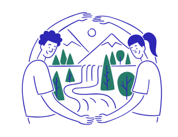
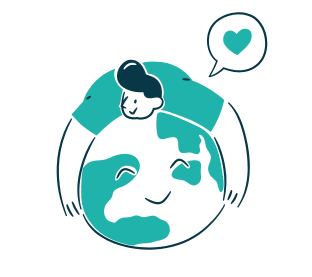
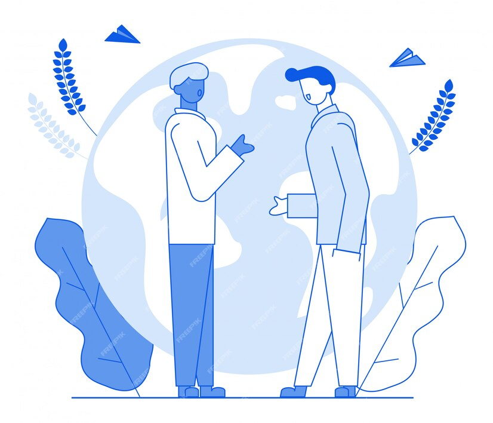
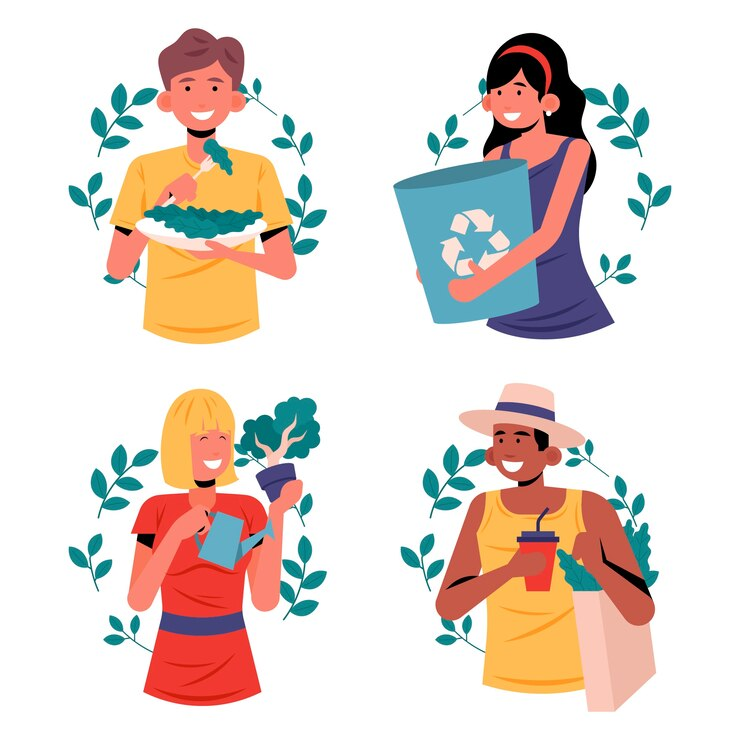
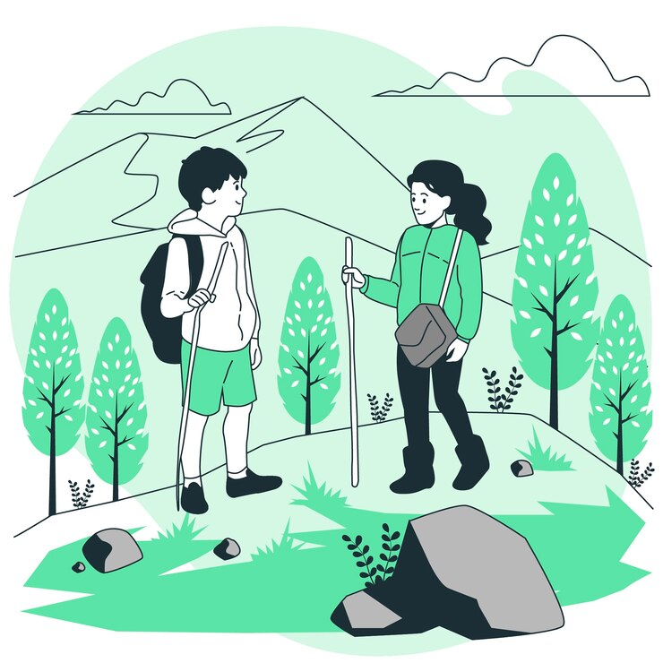
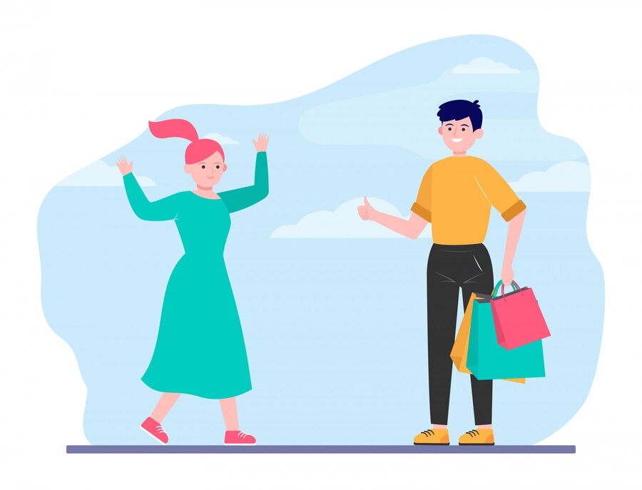
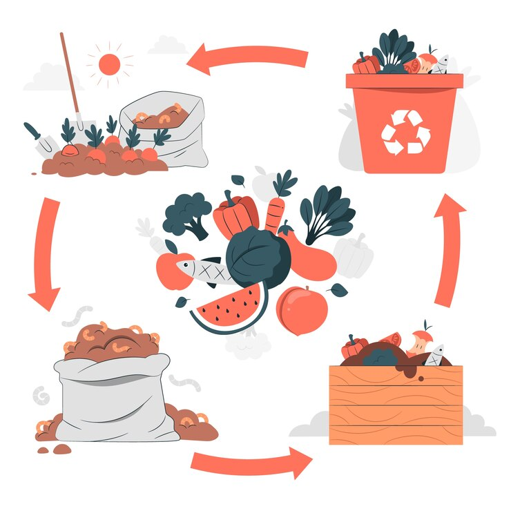

Qu’est ce que la protection de l’environnement ?
L’environnement, la planète, le climat, même combat ?
Le terme environnement est récent, puisqu’il n’est apparu dans le grand Larousse de la langue française qu’en 1972, où il est défini comme « l’ensemble des éléments naturels ou artificiels qui conditionnent la vie de l’homme ».
L’Union européenne définit l’environnement comme « l'ensemble des éléments qui dans la complexité de leurs relations constituent le cadre, le milieu et les conditions de vie pour l'homme ».
Protéger l’environnement c’est donc agir pour limiter l’impact des activités humaines sur la planète, sur l’environnement, et pour le climat.
Pourquoi protéger l’environnement ?
Lutter contre le réchauffement climatique
Lié aux émissions de gaz à effet de serre, le réchauffement climatique désigne le phénomène d’augmentation moyenne des températures à la surface de la Terre. Ce changement climatique touche toutes les régions du monde, menaçant ainsi l’environnement.
Préserver notre planète, préserver notre avenir
On le dit souvent, mais c’est essentiel : assurer l’avenir de l’humanité, c’est aussi garantir notre propre survie.
Pour nos ressources
Préserver nos ressources naturelles, c’est savoir limiter intelligemment notre consommation. Certaines ressources sont renouvelables, d’autres non, et beaucoup s’épuisent plus vite qu’on ne le pense. C’est pourquoi il est essentiel d’adopter des pratiques durables pour protéger ces trésors précieux.
Par exemple, l’agriculture durable encourage des méthodes qui sont non seulement respectueuses de l’environnement, mais aussi économiquement viables et équitables pour les communautés.
Pour l’air que nous respirons
Les causes de la pollution atmosphérique sont diverses ; issues d’émissions atmosphériques d’origine naturelle (incendies, volcanisme) ou bien anthropiques (liées aux activités humaines).
Pour la biodiversité
Préserver notre biodiversité, la nature et les espèces ? Le fait de polluer entraîne la modification des milieux naturels, ce qui impacte « la physiologie et le comportement des organismes exposés ou les caractéristiques des biotopes et donc, in fine, la composition et la structure des populations » , selon Futura Planète.
Adoptez un mode de vie plus respectueux de l'environnement
Voici quelques actions simples que vous pouvez adopter au quotidien pour diminuer votre impact sur la planète :
1. Réduisez votre consommation d'énergie

Baisser le chauffage ou limiter la climatisation aide à économiser l'énergie. Ces gestes simples permettent de diminuer votre empreinte carbone tout en réduisant vos factures d'énergie.
2. Choisissez des moyens de transport durables
Optez pour les transports en commun, le vélo, ou la marche lorsque cela est possible. Si vous devez conduire, essayez le covoiturage pour réduire les émissions par passager. En réduisant l'utilisation de la voiture, vous contribuez à la diminution de la pollution atmosphérique.
3. Réduisez, réutilisez et recyclez
Privilégiez les produits avec moins d'emballage et optez pour des articles réutilisables, comme les sacs en tissu ou les bouteilles réutilisables. Recyclez autant que possible pour donner une seconde vie aux matériaux et réduire les déchets.
4. Mangez de manière écoresponsable
Réduisez votre consommation de viande et privilégiez les produits locaux et de saison. La production de viande génère beaucoup de gaz à effet de serre, donc manger plus de végétaux contribue à réduire votre empreinte carbone.
5. Réduisez votre consommation de plastique

Évitez les produits à usage unique et préférez les contenants en verre, en métal ou en tissu. Par exemple, utilisez des gourdes au lieu de bouteilles en plastique et des sacs réutilisables pour faire vos courses.
6. Optez pour des énergies renouvelables
Si possible, installez des panneaux solaires ou choisissez un fournisseur d'énergie verte. Utiliser des énergies renouvelables diminue la dépendance aux énergies fossiles et réduit l'empreinte carbone globale.
7. Achetez moins, mais mieux
Adoptez une consommation responsable en achetant des produits de qualité et durables. Évitez le gaspillage et favorisez des marques éthiques qui respectent l'environnement et les droits des travailleurs.
8. Compostez vos déchets organiques
Le compostage permet de réduire les déchets organiques envoyés aux décharges, où ils produisent du méthane, un gaz à effet de serre puissant. En compostant, vous créez également un engrais naturel pour vos plantes.